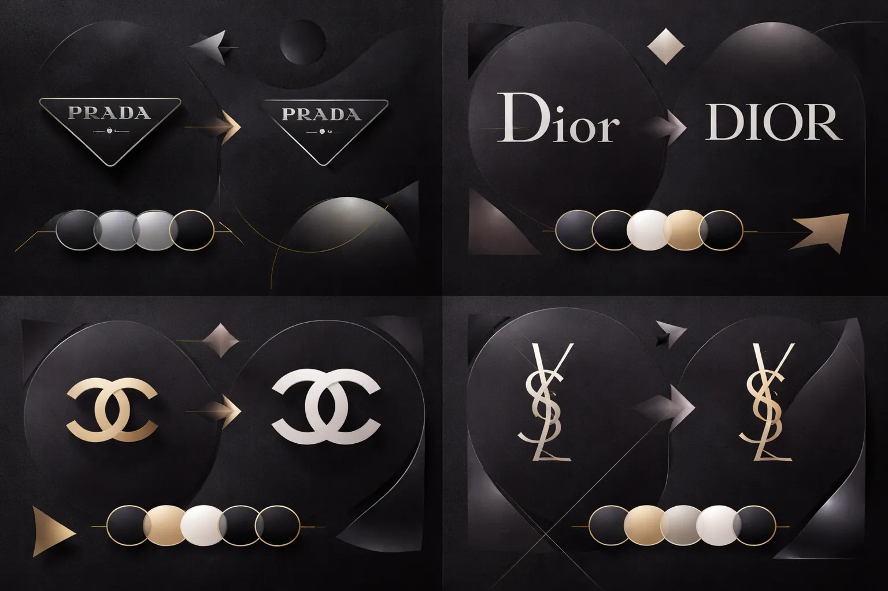
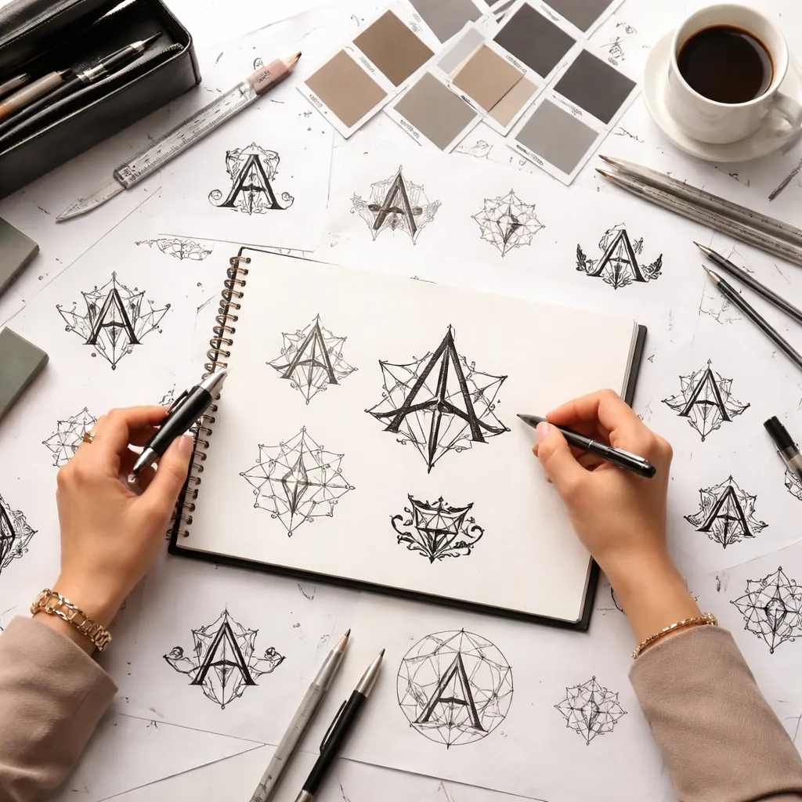
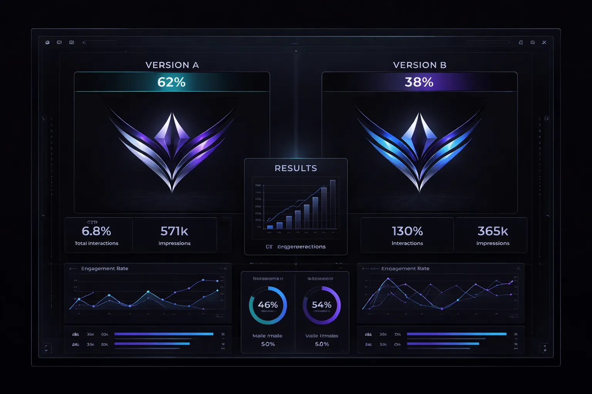
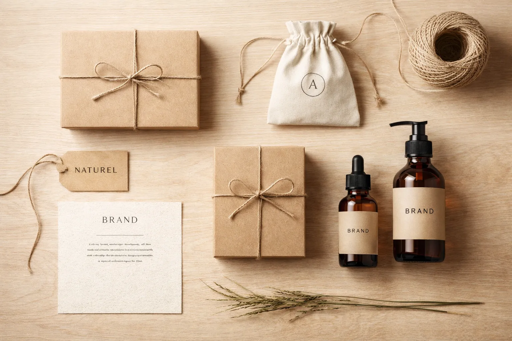

Articles récents

Les 10 refontes de marque qui ont marqué les esprits : entre courage et catastrophe
Jaguar, Burberry, Tropicana, Gap — certains rebranding ont propulsé des entreprises vers l'avenir, d'autres ont provoqué des crises en quelques jours. Analyse critique des transformations visuelles les plus marquantes, des succès aux retours en arrière.
Comment Loro Piana est devenue la marque la plus discrète et la plus désirée du luxe mondial
Pas de logo sur les vêtements, pas de campagnes publicitaires. Le luxe silencieux comme stratégie radicale de différenciation.
Apple sans Jony Ive : comment l'identité visuelle a-t-elle évolué depuis 2019 ?
Cinq ans après le départ du directeur du design, le regard d'un expert sur les transformations subtiles mais profondes du langage visuel Apple.

Pentagram : dans les coulisses du cabinet qui a redessiné la moitié des grandes marques mondiales
Méthode, clientèle, avenir du design d'identité : enquête sur le fonctionnement du studio légendaire.

A/B testing le logo : quand les données remplacent l'instinct du designer
Netflix, Spotify, Airbnb — les géants du numérique testent leurs logos auprès de millions d'utilisateurs avant de les valider. Le design par les données, bénédiction ou malédiction ?

Packaging sans plastique : les marques qui ont transformé leur contrainte écologique en avantage esthétique
Papier kraft, verre, aluminium recyclé — les nouvelles règles du conditionnement deviennent un territoire créatif inédit pour les designers.